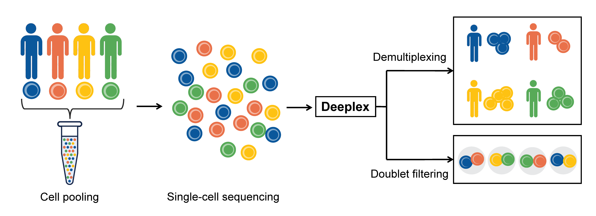
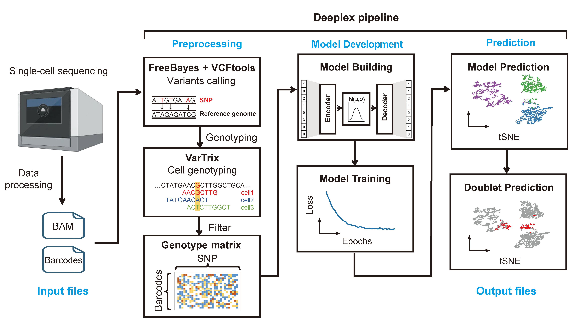
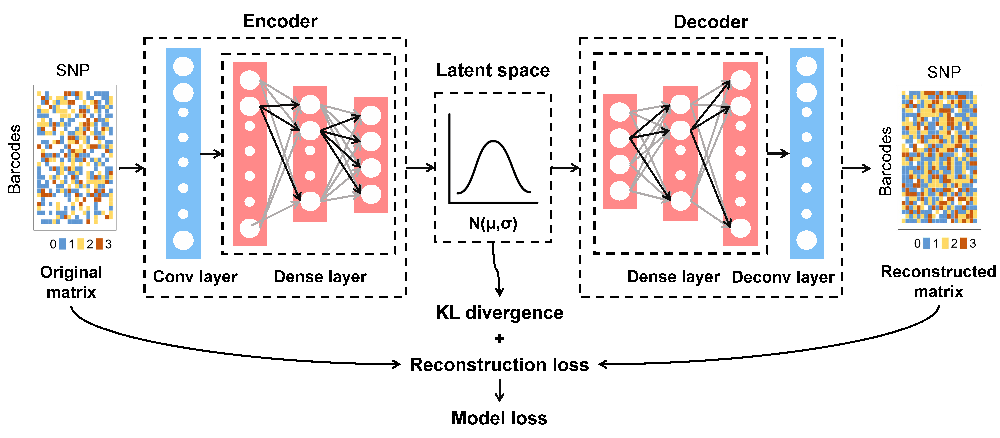

Deeplex：A variational autoencoder based demultiplexing approach for pooled single-cell sequencing data
DeeplexIntroductionPurpose of DeeplexOverview of the Deeplex PipelineSchematic of the Model ArchitectureModes of Operation in DeeplexCitationGetting started (Linux)Download the Singularity imageRequirementsUsing the pipeline scriptRunning each step separately without the pipeline scriptStep 1: Preprocessing (prepare.py)Step 2: Train the model (deeplex.py)Step 3: Cluster cells using the trained model (prediction.py)Step 4: Calling doublets (doublet.py)
Deeplex is a deep learning-based method for clustering individuals in mixed-genotype single-cell RNA-seq experiments.


The input files required by Deeplex are the BAM file (possorted_genome_bam.bam) generated by Cell Ranger, the barcode file containing all cell barcodes (barcodes.txt), and an appropriate reference genome.
Deeplex consists of four main steps. It first uses several commonly used tools (freebayes, vcftools, and VarTrix) for data preprocessing to generate the matrix required for model training. Finally, the model is used for data reconstruction, cell clustering, and doublet identification.

Deeplex supports two modes of operation:
pipeline.py) to run all steps sequentially;prepare.py, deeplex.py, prediction.py, doublet.py).If you find this tool useful, please cite:
https://github.com/Deeplex-Xulab/Deeplex
https://deeplex-xulab.github.io
https://figshare.com/s/7b0b79dafc2e13592436
Deeplex is distributed as a Singularity/Apptainer container for easy and reproducible installation across different Linux environments.
The pre-built container image (deeplex.sif, 1.66 GB) is hosted on figshare:
https://figshare.com/s/7b0b79dafc2e13592436
You may download it directly via your browser and place deeplex.sif in your working directory.
Singularity version ≥ 3.5.3 or Apptainer version ≥ 1.0.0.
Singularity has been rebranded as Apptainer; both are supported.
If you are running on a scientific computing cluster, Singularity/Apptainer is often pre-installed. Please contact your system administrator if you are unsure.
If you are running on your own Linux machine, you may need to install Singularity or Apptainer first.
which singularitysingularity --version# orwhich apptainerapptainer --versionA typical command looks like this:
singularity exec deeplex.sif pipeline.py -g <reference.fasta> -b <possorted_genome_bam.bam> -c <barcodes.txt> -cn <cluster_num> -o <output_dir>The options for using pipeline.py are:
singularity exec deeplex.sif pipeline.py -husage: pipeline.py [-h] [-H] [-g GENOME] [-b BAM] [-c BARCODE] [-o OUT] [-bn BATCH_NUM] [-en EPOCH_NUM] [-ld LATENT_DIM] [-cn CLUSTER_NUM] [-si SHOW_INFO] [-tr TEST_RADIO] [-vr VALID_RADIO] [-s SEED] [-lr LEARNING_RATE] [-it IMG_TYPE] [-p PREFIX] [-pc PLOT_CENTER] [-f FRACTION]
In Deeplex’s pipeline mode, the steps are executed sequentially in the following order: prepare.py, deeplex.py, prediction.py, and doublet.py. You can use the -H option to get the help message for each step.
optional arguments: -h, --help show this help message and exit -H, --HELP Help message for each step -g GENOME, --genome GENOME Reference genome -b BAM, --bam BAM BAM file -c BARCODE, --barcode BARCODE Barcode list -o OUT, --out OUT Output Directory -bn BATCH_NUM, --batch_num BATCH_NUM Number of batch, default 16 -en EPOCH_NUM, --epoch_num EPOCH_NUM Number of epoch, default 25 -ld LATENT_DIM, --latent_dim LATENT_DIM latent dimension, default 4 -cn CLUSTER_NUM, --cluster_num CLUSTER_NUM Number of clusters, default 3 -si SHOW_INFO, --show_info SHOW_INFO Whether to display detailed information, default True -tr TEST_RADIO, --test_radio TEST_RADIO Ratio of test set, default 0.2 -vr VALID_RADIO, --valid_radio VALID_RADIO Ratio of validation set, default 0.2 -s SEED, --seed SEED Random seed, default 42 -lr LEARNING_RATE, --learning_rate LEARNING_RATE Learning rate, default 0.0001 -it IMG_TYPE, --img_type IMG_TYPE Image type (tSNE/UMAP), default tSNE -p PREFIX, --prefix PREFIX Output prefix, default vae_ -pc PLOT_CENTER, --plot_center PLOT_CENTER Do you want to draw cluster centers, default False -f FRACTION, --fraction FRACTION Is the percentage of doublet cells known in advance, default Falsefreebayes -f <reference.fasta> <possorted_genome_bam.bam> -C 2 -q 30 -n 3 -E 1 -m 30 --min-coverage 40 --pooled-continuousvcftools --vcf <call_snv.vcf> --remove-indels --recode --recode-INFO-all --out <prefix>consensus scoring method of VarTrix.vartrix_linux --scoring-method consensus --vcf <prefix.recode.vcf> --bam <possorted_genome_bam.bam> --fasta <reference.fasta> --cell-barcodes <barcodes.txt> --threads 10 --out-matrix <all.mtx>A typical command looks like this:
singularity exec deeplex.sif prepare.py -g <reference.fasta> -b <possorted_genome_bam.bam> -c <barcodes.txt> -o <output_dir>The options for using prepare.py are:
singularity exec deeplex.sif prepare.py -husage: prepare.py [-h] [-g GENOME] [-b BAM] [-c BARCODE] [-o OUT]
Preparation of training data. Provide a BAM file, a barcode list, and a reference genome as input to prepare data for model training.
optional arguments: -h, --help show this help message and exit -g GENOME, --genome GENOME Reference genome -b BAM, --bam BAM BAM file -c BARCODE, --barcode BARCODE Barcode list -o OUT, --out OUT Output DirectoryOutput directory structure:
output/├── deeplex_prepare.log: Log file generated by the prepare step└── __prepare__: Output directory of the prepare step ├── freebayes: Output directory of freebayes │ ├── freebayes.completed: Indicates that freebayes has finished; delete this file to rerun the step │ ├── freebayes.vcf: freebayes VCF file generated by freebayes │ ├── SNPs_rmindel.recode.vcf: SNP VCF file filtered from freebayes.vcf using vcftools │ └── vcftools.completed: Indicates that vcftools has finished; delete this file to rerun the step └── vartrix: Output directory of vartrix ├── filter.completed: Indicates that filtering is complete; delete this file to rerun the step ├── matrix.completed: Indicates that conversion from sparse to dense matrix is complete; delete to rerun ├── matrix_filter.txt: Matrix after filtering ├── matrix_final.txt: Final matrix used for training ├── matrix.txt: Dense matrix converted from sparse format ├── SNPs.loci.txt: File listing all SNP loci ├── vartrix.completed: Indicates that vartrix has finished; delete this file to rerun the step └── vartrix.mtx: Sparse matrix output by vartrixmatrix_final.txt) is used to train the Deeplex model, which is based on a variational autoencoder (VAE).A typical command looks like this:
singularity exec deeplex.sif deeplex.py -m <matrix_final.txt> -c <cluster_num> -o <output_dir>The options for using deeplex.py are:
singularity exec deeplex.sif deeplex.py -husage: modelTraining.py [-h] [-m MTX] [-bn BATCH_NUM] [-en EPOCH_NUM] [-ld LATENT_DIM] [-c CLUSTER] [-si SHOW_INFO] [-tr TEST_RADIO] [-vr VALID_RADIO] [-s SEED] [-lr LEARNING_RATE] [-it IMG_TYPE] [-o OUT]
Model training. Input the required data to train the model.
optional arguments: -h, --help show this help message and exit -m MTX, --mtx MTX Matrix file -bn BATCH_NUM, --batch_num BATCH_NUM Number of batch, default 16 -en EPOCH_NUM, --epoch_num EPOCH_NUM Number of epoch, default 25 -ld LATENT_DIM, --latent_dim LATENT_DIM latent dimension, default 4 -c CLUSTER, --cluster CLUSTER Number of clusters, default 3 -si SHOW_INFO, --show_info SHOW_INFO Whether to display detailed information, default True -tr TEST_RADIO, --test_radio TEST_RADIO Ratio of test set, default 0.2 -vr VALID_RADIO, --valid_radio VALID_RADIO Ratio of validation set, default 0.2 -s SEED, --seed SEED Random seed, default 42 -lr LEARNING_RATE, --learning_rate LEARNING_RATE Learning rate, default 0.0001 -it IMG_TYPE, --img_type IMG_TYPE Image type (tSNE/UMAP), default tSNE -o OUT, --out OUT Output DirectoryOutput directory structure:
output/├── deeplex_training.log: Log file for the training step└── __train__: Output directory for the training step ├── deeplex_train.log: Log detailing the model training process ├── loss: Output directory for model loss metrics │ ├── kl_loss.pdf: Line plot of KL divergence during training │ ├── kl_loss.png │ ├── kl_loss.txt: KL divergence values during training │ ├── loss.pdf: Line plot of total loss during training │ ├── loss.png │ ├── loss.txt: Total loss values during training │ ├── recon_loss.pdf: Line plot of reconstruction loss during training │ ├── recon_loss.png │ └── recon_loss.txt: Reconstruction loss values during training ├── models: Directory containing model output │ └── model_025.weights.h5: Saved model weights ├── test_barcodes.list: List of cells used for the test set ├── train_barcodes.list: List of cells used for the training set ├── valid_barcodes.list: List of cells used for the validation set └── train.completed: Indicates that training is complete; delete this file to rerun the trainingmatrix_final.txt) to perform clustering on each cell, resulting in an initial clustering outcome.A typical command looks like this:
singularity exec deeplex.sif prediction.py -m <matrix_final.txt> -vm <model_file> -c <cluster_num> -o <output_dir>model_025.weights.h5). The script will automatically read the best model path from the output/__train__/deeplex_train.log file.The options for using prediction.py are:
singularity exec deeplex.sif prediction.py -husage: modelPrediction.py [-h] [-m MTX] [-vm VAE_MODEL] [-ld LATENT_DIM] [-c CLUSTER] [-si SHOW_INFO] [-s SEED] [-it IMG_TYPE] [-o OUT] [-p PREFIX] [-pc PLOT_CENTER]
Model prediction. Using a trained model for prediction.
optional arguments: -h, --help show this help message and exit -m MTX, --mtx MTX Matrix file -vm VAE_MODEL, --vae_model VAE_MODEL Trained VAE model -ld LATENT_DIM, --latent_dim LATENT_DIM Latent dimension, default 4 -c CLUSTER, --cluster CLUSTER Number of clusters, default 3 -si SHOW_INFO, --show_info SHOW_INFO Whether to display detailed information, default True -s SEED, --seed SEED Random seed, default 42 -it IMG_TYPE, --img_type IMG_TYPE Image type (tSNE/UMAP), default tSNE -o OUT, --out OUT Output Directory -p PREFIX, --prefix PREFIX Output prefix, default vae_ -pc PLOT_CENTER, --plot_center PLOT_CENTER Do you want to draw cluster centers, default FalseOutput directory structure:
output/├── deeplex_prediction.log: Log file for the prediction step└── __prediction__: Output directory for the prediction step ├── imgs: tSNE/UMAP dimensionality reduction clustering plots │ ├── vae_tSNE_pred.pdf │ └── vae_tSNE_pred.png └── results: Directory for prediction results ├── vae_tSNE_pred.txt: Predicted clustering results indicating the most likely single-cell origin for each cell └── vae_tSNE_result_data.txt: Coordinate data from tSNE/UMAP dimensionality reductionmatrix_final.txt) is used to calling doublets, producing the final prediction output.A typical command looks like this:
singularity exec deeplex.sif doublet.py -m <matrix_final.txt> -s <single_prediction> -c <coordinate_file> -o <output_dir>output/__prediction__/results/vae_tSNE_pred.txt or output/__prediction__/results/vae_tSNE_result_data.txt.-f parameter to assist in identifying doublets.The options for using doublet.py are:
singularity exec deeplex.sif doublet.py -husage: doubletPrediction.py [-h] [-m MTX] [-s SINGLE_PRED] [-c COORDINATE] [-f FRACTION] [-it IMG_TYPE] [-o OUT] [-p PREFIX]
Doublet cell prediction. Based on the previous step’s prediction resultsfor each cell, further predict which of them are doublets.
optional arguments: -h, --help show this help message and exit -m MTX, --mtx MTX Matrix file -s SINGLE_PRED, --single_pred SINGLE_PRED tSNE_pred.txt, single cell prediction result file -c COORDINATE, --coordinate COORDINATE tSNE_result_data.txt, tSNE/UMAP result data file -f FRACTION, --fraction FRACTION Is the percentage of doublet cells known in advance, default False -it IMG_TYPE, --img_type IMG_TYPE Image type (tSNE/UMAP), default tSNE -o OUT, --out OUT Output Directory -p PREFIX, --prefix PREFIX Output prefix, default vae_Output directory structure:
output/├── deeplex_doublet.log: Log file for the doublet prediction process└── __doublet__: Output directory for the doublet step ├── doublet.log: Log file for the doublet detection process ├── imgs: tSNE/UMAP dimensionality reduction clustering plots │ ├── vae_tSNE_pred_doublet.pdf: Distribution plot of detected doublets │ ├── vae_tSNE_pred_doublet.png │ ├── vae_tSNE_pred.pdf: Distribution plot of all clusters │ ├── vae_tSNE_pred.png │ ├── vae_tSNE_pred_rmdoublet.pdf: Distribution plot of clusters excluding doublets │ └── vae_tSNE_pred_rmdoublet.png └── results: Output directory for prediction results ├── doublet_barcodes.list: List of barcodes identified as doublets └── vae_tSNE_pred.txt: Final prediction resultsvae_tSNE_pred.txt will look like:
barcode prediction best_single doubletCGGAATTTCGCCACTT-1 1 1 --GTAATGCGTGGGCTCT-1 1 1 --TACCTGCCAATACCTG-1 0 1 1,2GTCCACTCAAGAGTGC-1 1 1 --CAATGACCACCAGTTA-1 1 1 --